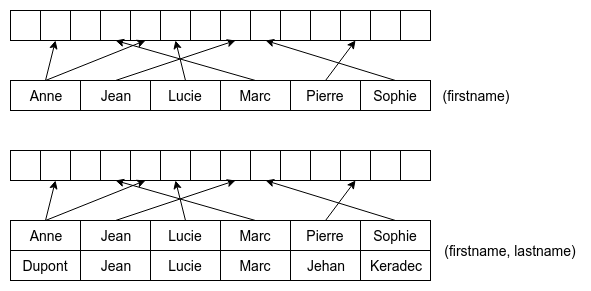

Afin de permettre d'optimiser les performances, la plupart des SGBD permettent de définir des index sur des colonnes.
Les index créent en mémoire des structures de données permettant d'optimiser les recherches en organisant les données.
Il est possible de créer plusieurs types d'index.
CREATE INDEX idx_nom_prenom ON utilisateur (nom, prenom); -- Optimisation des requêtes sur les colonnes nom et prenom
CREATE UNIQUE INDEX idx_uq_email ON utilisateur (email); -- Optimisation des requêtes sur la colonne email et ajout d'une contrainte d'unicitéPour supprimer un index :
ALTER TABLE utilisateur DROP INDEX idx_nom_prenom;Pour effectuer des recherches avancées sur des champs textes, il est possible de définir des index de type FULLTEXT :
ALTER TABLE article ADD FULLTEXT (titre, contenu);Il sera alors possible d'utiliser les fonctions MATCH et AGAINST pour récupérer un score lors d'une recherche :
SELECT *, MATCH(titre, contenu) AGAINST ('recherche fulltext') AS score
FROM article;